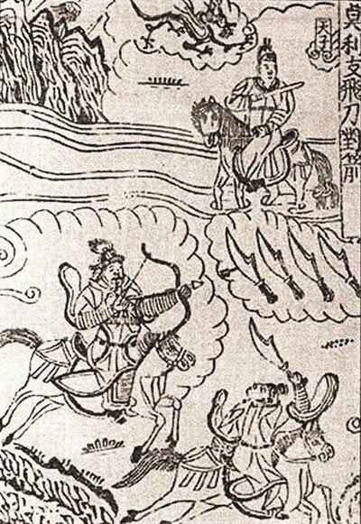
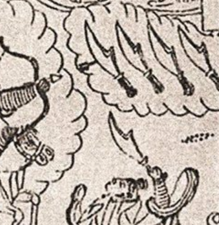
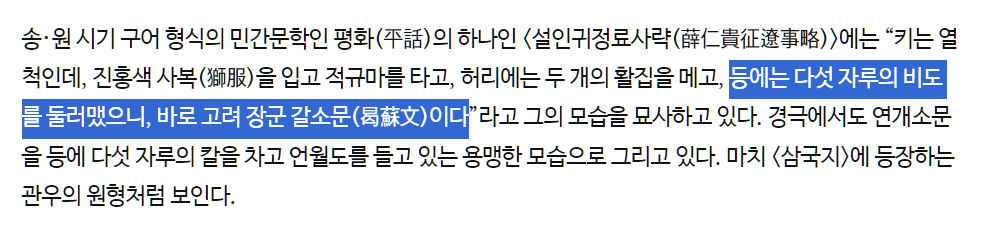
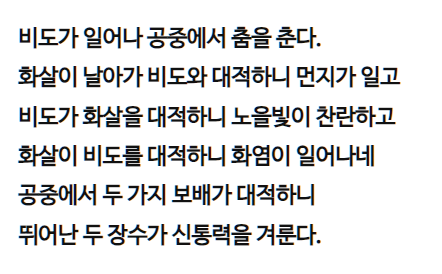
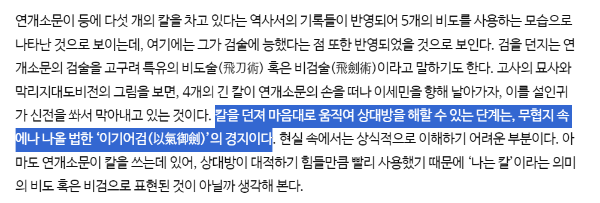

역사서에도 이새끼 어검술 쓴다고 묘사됨





역사서에도 이새끼 어검술 쓴다고 묘사됨
투척바바인가
건곤대나이!
그거 아니야
존나 인자강이긴 했나보네
고증이었어?ㅋㅋㅋ
고증 ㅋㅋㅋ
고졸이었어?ㅋㅋㅋ
학교 안나왔다네요~
현실의 자하마신 같은 존재였다는거네
현실 뮤탈 ㄷㄷ
ㅋㅋ 너무 신격화 했잖아
근데 고구려 무사들 칼 다섯 자루씩은 기본으로 찼다고 하던데
걍 존나 싸움 잘하는 말탄 깡패들이었던 듯
수시로 요서까지 넘어가서 들쑤시고 군사들이 북경 인근까지도 침입한 바 있어서 수나라와 전쟁하기 전부터도 골칫거리였다는데
그때 당시 칼 내구도가 씹창이라 부러지면 새거 꺼내고 이런 느낌이였을 듯
그리고 금마들이 삼국 통일했으면 우리 러시아 느낌으로 살고 있었을지도.
진작 중국에 흡수되었을수도 있음
중국쳐들어간 이민족들처럼..ㅋㅋㅋㅋ
고구려가 통일했으면 거의 무족권 당나라멸망하고 쳐들어갔을듯 ㅋㅋㅋ
일찍이 신라, 백제 밀어버리고 통일해서 후방 걱정없었으면 쉽게 중국한테 흡수는 안당했을거 같음
물론 고구려라는 나라는 결국은 언젠가 망했겠지만 그래도 역사를 배우면 존나 아쉽긴해 삼국중에 제일 매력적인 나라인대ㅋㅋㅋ
아니 내말은 화북먹고 결국 중화엔딩 당했을거라는거였음 ㅋㅋㅋ
안녕친구들하고 손드는거같냐
논란되자 고증입니다
이렐리아는 실존하며 그(녀)는 연개소문이시다
ㅇㅖ?
드론의 지식을 가진 회귀자 ㄷㄷ
칼을 여러개 들고 다니고, 뭐하면 던지고 그랬나보네
그만큼 잘싸웠다는 거겠지
중국 경극 독목관(獨木關)에 등에 칼찬 사람이 연개소문이잖아
칼 상태보고 투척용으로 썼나범
민간소설이라는 점에서 알 수 있듯이 그냥 과장된 이야기임.
연개소문이 다섯자루 칼을찬이유가 고구려는 5개의 대귀족가문이 같이 나라를 다스리는 정치권력체제 였는데 연개소문이 나머지 4개 가문을 쳐내고 혼자 권력을 독차지하고 그걸 내세우기 위해 다섯자루칼을 차고 다녔다는 이야기가 있음
개소문임;;
비장 여포랑 같은 맥락인가
날쌔다는 의미를 문자 그대로 날라다니는 칼로 해석?
날라> 날아
어검정도는 해줘야
이기어검
엥 어떻게